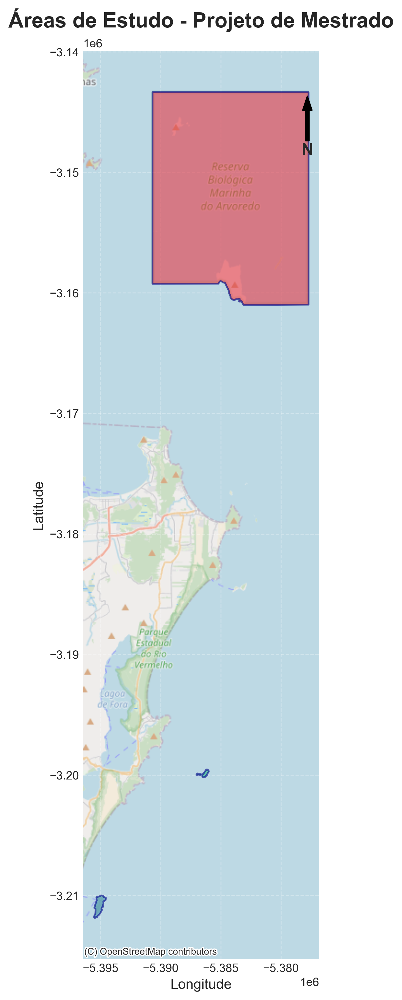
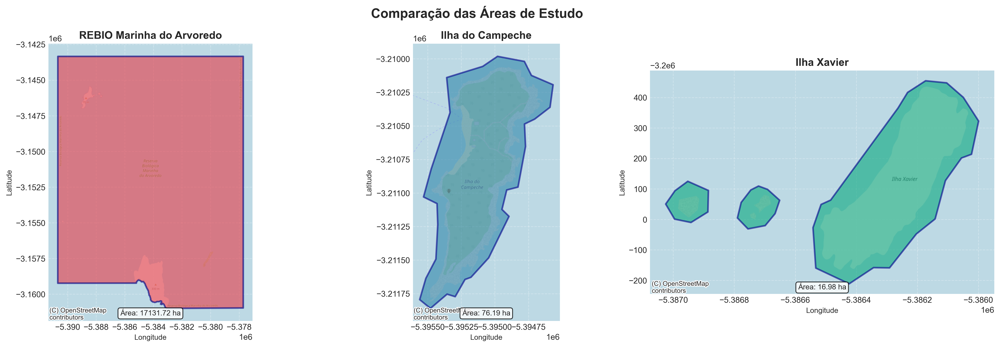

Ilhas Costeiras de Santa Catarina no Contexto da Crise Climática
Projeto de Mestrado - PPGOceano/UFSC | 2026
Aluno: Ronan Armando Caetano
Investigar como variáveis ambientais e geomorfológicas influenciam a diversidade e distribuição de macrófitas marinhas em três ilhas costeiras de Santa Catarina, com foco em mapeamento espacial e modelagem de adequabilidade de habitat.
Hoje, ainda faltam mapas detalhados e comparáveis sobre onde as macrófitas marinhas ocorrem nas ilhas costeiras de Santa Catarina e como elas respondem às mudanças ambientais. Sem essa base, fica mais difícil priorizar monitoramento e planejar ações de conservação.
A equipe registra espécies, abundância e condições ambientais nas três ilhas, em uma metodologia padronizada para permitir comparação justa.
Os dados de campo são integrados em mapas e modelos para indicar áreas mais favoráveis para as macrófitas e áreas prioritárias para acompanhamento.
O projeto gera produtos científicos e técnicos que podem ser usados por pesquisa, gestão ambiental e planejamento de monitoramento costeiro.
Três ilhas costeiras de Santa Catarina com gradiente de tamanho, isolamento e pressão antrópica.
Centroide: 27°13'33"S, 48°21'56"W
Área: 17.131,72 ha
Status: Unidade de Conservação Federal
Distância da costa: ~15 km
Faixa de estudo: 0-15 m
Centroide: 27°41'48"S, 48°27'55"W
Área: 76,19 ha
Status: Patrimônio Arqueológico/Paisagístico
Distância da costa: ~1,5 km
Faixa de estudo: 0-15 m
Centroide: 27°36'36"S, 48°23'11"W
Área: 16,98 ha
Status: Sem proteção específica
Distância da costa: ~8 km
Faixa de estudo: 0-15 m
| Critério | Arvoredo | Campeche | Xavier |
|---|---|---|---|
| Área (ha) | 17.131,72 | 76,19 | 16,98 |
| Tamanho relativo | ~1.000x maior que Xavier | Intermediário | Menor área do gradiente |
| Distância da costa | ~15 km | ~1,5 km | ~8 km |
| Status de proteção | UC Federal (REBIO) | Patrimônio Arqueológico/Paisagístico | Sem proteção específica |
| Pressão antrópica | Baixa (regulada) | Alta | Moderada |
| Pressão turística | Controlada | Intensa no verão | Menor que Campeche |
| Acessibilidade logística | Mais complexa (embarcação e janela climática) | Mais simples e rápida | Intermediária |
| Grau de isolamento | Alto | Baixo | Intermediário |
| Complexidade de habitat | Alta (múltiplos microambientes) | Média (setores contrastantes) | Média/alta em pequena escala |
| Substrato predominante | Costões rochosos com zonas de alta energia | Mosaico rochoso e arenoso | Costões e ilhotas rochosas |
| Relevância para modelagem | Referência para condições mais preservadas | Referência para alta influência antrópica | Referência para área pequena e menos estudada |
| Papel no gradiente do estudo | Extremo de maior área/isolamento | Extremo de maior uso humano/proximidade | Ponto intermediário de conectividade |
A seleção de Arvoredo, Campeche e Xavier foi feita para representar um gradiente ecológico realista e comparável em escala regional, permitindo testes robustos sobre distribuição de macrófitas e adequabilidade de habitat.
Os mapas abaixo mostram a base espacial usada para comparar Arvoredo, Campeche e Xavier. Aqui ficam os produtos cartográficos de contexto territorial do estudo.

Mapa de referência das três áreas insulares de estudo.

Comparação espacial entre REBIO Arvoredo, Campeche e Xavier.
Avaliar a diversidade e a distribuição espacial das comunidades de macrófitas marinhas na Ilha do Campeche, Ilha Xavier e REBIO Arvoredo, correlacionando padrões biológicos com variáveis ambientais e geomorfológicas para gerar modelos de adequabilidade de habitat.
Realizar inventário de macrófitas na faixa de 0 a 15 m de profundidade.
Mapear distribuição espacial e abundância relativa com geoprocessamento.
Gerar ortofotos e modelos de superfície para refinar o mapeamento de habitat.
Caracterizar substrato rochoso e variáveis locais, como transparência da água.
Construir índice de adequabilidade e SDMs para estimar padrões de ocorrência (ou seja, onde as espécies tendem a aparecer).
Consolidar coleção de referência (herbário) para monitoramento de longo prazo.
A lógica do estudo é direta: medir as macrófitas em campo, registrar as condições do ambiente e depois transformar isso em mapas e modelos para entender onde cada espécie tem maior chance de ocorrer.
Resumo visual conectado: da coleta em campo até os produtos finais para conservação.
Pontos, transectos e logística.
Apneia/SCUBA, presença, abundância (DAFOR) e coleta em costão.
Profundidade, transparência e substrato.
Ortofoto e MDS com RGB/multiespectral.
Integração espacial dos dados.
Modelagem da adequabilidade e distribuição.
Conferência com campo e métricas.
Mapas e síntese para monitoramento.
Tipo de estudo: comparação entre três ilhas (Arvoredo, Campeche e Xavier).
Faixa de profundidade: 0 a 15 m.
Estratégia: repetir o mesmo método nas três áreas para comparar resultados de forma justa.
| Passo | O que será feito | Resultado esperado |
|---|---|---|
| Passo 1 | Definir pontos de amostragem, transectos e janelas operacionais (maré/tempo) em cada ilha | Plano de campo padronizado |
| Passo 2 | Executar amostragem subaquática por apneia (setores rasos) e mergulho com cilindro - SCUBA (setores mais profundos), com segurança e dupla de trabalho | Cobertura padronizada da faixa de 0 a 15 m em diferentes condições de profundidade |
| Passo 3 | Registrar presença e abundância de macrófitas (DAFOR), com foto georreferenciada por ponto/transecto | Lista e intensidade de ocorrência por ponto e por ilha |
| Passo 4 | Realizar coleta de material em costão rochoso (amostras/vouchers), com etiquetagem, acondicionamento e rastreabilidade | Material de referência para confirmação taxonômica e herbário |
| Passo 5 | Coletar variáveis ambientais no mesmo ponto (ex.: transparência, profundidade, tipo de substrato e geomorfologia) | Base ambiental associada aos registros biológicos |
| Passo 6 | Georreferenciar tudo em SIG e integrar dados de campo, drone e camadas ambientais | Banco espacial organizado, auditável e comparável entre campanhas |
| Passo 7 | Calcular IAH, rodar SDMs e validar os resultados com dados independentes de campo | Mapas de adequabilidade e distribuição potencial com qualidade controlada |
| Passo 8 | Conferir consistência final, gerar mapas temáticos e consolidar produtos para dissertação e gestão | Produtos técnicos e científicos prontos para uso e comunicação |
A fotogrametria por drone serve para transformar muitas fotos aéreas em mapas detalhados e mensuráveis da área costeira.
Em resumo: o drone melhora a base cartográfica do estudo e dá mais confiança para os modelos de habitat.
Para fortalecer a metodologia, será realizado um teste comparativo entre câmera RGB e câmera multiespectral, na mesma área e com condições semelhantes de maré e iluminação.
| Etapa do teste | Como será executada | Produto/indicador |
|---|---|---|
| 1. Planejamento de voo | Mesma área, altura e sobreposição equivalentes para os dois sensores | Comparação justa entre RGB e multiespectral |
| 2. Aquisição dos dados | Voos em janela curta para reduzir variação de luz, vento e mar | Conjunto de imagens pareáveis |
| 3. Processamento fotogramétrico | Geração de ortomosaico e MDS em ambos os sensores | Ortofotos e modelos de superfície comparáveis |
| 4. Produtos espectrais | No multiespectral, calcular índices (ex.: NDVI/GNDVI/NDRE ou equivalente costeiro) | Camadas para discriminar cobertura e vigor da vegetação |
| 5. Métricas de resolução | Comparar GSD, nitidez visual e erro geométrico (RMSE de checkpoints) | Desempenho espacial objetivo por sensor |
| 6. Validação ecológica | Conferir mapas com pontos de campo (presença/ausência e DAFOR) | Acurácia temática para habitat/macrófitas |
| 7. Síntese final | Comparar vantagens de cada sensor e recomendar uso isolado ou combinado | Protocolo otimizado para campanhas futuras |
| Indicador | Meta ideal | Faixa aceitável | Como verificar | Ação corretiva |
|---|---|---|---|---|
| GSD (resolução no solo) | 2-5 cm/pixel | até 7 cm/pixel | Relatório do processamento fotogramétrico | Ajustar altura de voo e/ou distância focal |
| Sobreposição frontal | 80% | 75-85% | Plano de voo + log do drone | Replanejar linhas de voo e velocidade |
| Sobreposição lateral | 70% | 65-75% | Plano de voo + inspeção do ortomosaico | Reduzir espaçamento entre faixas |
| Altura de voo | 60-100 m (conforme sensor) | até 120 m (norma vigente) | Telemetria do drone e caderno de campo | Padronizar altitude por campanha e sensor |
| Velocidade de voo | 3-6 m/s | até 8 m/s | Log de missão | Reduzir velocidade em mar agitado/vento |
| Horário de aquisição | 10h-14h, com baixa cobertura de nuvens | 9h-15h | Registro de campo e metadados EXIF | Remarcar voo para reduzir sombra e reflexo |
| Estado do mar/vento | Mar calmo e vento baixo | vento até ~20 km/h | Boletim meteorológico + observação local | Suspender voo em condições críticas |
| RMSE geométrico | < 10 cm | 10-15 cm | Checkpoints/GCPs independentes | Refazer ajuste de bloco e revisar GCPs |
| Densidade de GCP/Checkpoint | Distribuição em todo o mosaico | mínimo 5 pontos bem distribuídos | Mapa de pontos de controle | Adicionar pontos nas bordas e no centro |
| Qualidade radiométrica (multiespectral) | Painel de calibração antes/depois do voo | Ao menos 1 calibração por missão | Metadados e imagens do painel | Recalibrar e repetir aquisição se necessário |
| Validação temática | Acurácia global > 85% e Kappa > 0,75 | Acurácia > 80% e Kappa > 0,65 | Matriz de confusão com pontos de campo | Revisar classes, treino e amostragem |
| Reprodutibilidade entre campanhas | Mesmo protocolo e configurações-chave | Diferenças documentadas e justificadas | Checklist de padronização por campanha | Atualizar protocolo e registrar desvios |
| Fonte/Ferramenta | Quando consultar | Para que usar | Critério prático (go/no-go) |
|---|---|---|---|
| INMET (previsão e alertas) | 24-48 h antes e na manhã do voo | Checar tendência de chuva, vento e alertas oficiais | No-go: alerta ativo para vento forte, chuva intensa ou tempestade |
| CPTEC/INPE (modelos) | 24 h antes + revisão no dia | Comparar cenários de vento/nuvem e reduzir incerteza da janela de missão | No-go: divergência alta entre modelos e risco de instabilidade no horário planejado |
| Marinha (DHN/CHM: maré e estado do mar) | 24 h antes e imediatamente antes da saída | Avaliar segurança de navegação, ondulação e condições costeiras | No-go: mar agitado/ressaca para acesso seguro e decolagem em embarcação |
| METAR/TAF (REDEMET/aeroporto próximo) | 2-6 h antes da missão | Confirmar condição observada em tempo real e tendência de curtíssimo prazo | No-go: visibilidade baixa, rajadas fortes ou células de chuva em aproximação |
| Windy/Meteoblue (apoio visual) | Planejamento inicial e ajuste final | Visualizar vento por altitude e nuvens; apoio à decisão logística | Usar apenas como apoio; decisão final deve seguir fontes oficiais + observação local |
| Observação local de campo | Imediatamente antes da decolagem | Validar vento real, brilho na água, nuvem baixa e segurança operacional | No-go: rajadas acima do limite do drone, chuva, visibilidade ruim ou reflexo excessivo |
| Tipo de drone/cenário | Software de plano de voo recomendado | Ponto forte para o projeto | Observação operacional |
|---|---|---|---|
| DJI Enterprise (Mavic 3E, Matrice) | DJI Pilot 2 | Missão de mapeamento automática estável e rápida em campo | Padronizar altitude, sobreposição e velocidade entre campanhas |
| DJI com fluxo iPad | DJI GS Pro | Interface simples para grade fotogramétrica | Verificar compatibilidade do modelo antes da campanha |
| Campanhas com ênfase em fotogrametria acadêmica | Pix4Dcapture Pro | Boa padronização de missão e integração com processamento | Manter parâmetros fixos para comparação temporal |
| Operação multiárea com gestão em nuvem | DroneDeploy | Fluxo de campo ágil e centralização de missões | Revisar custos/licenciamento para uso contínuo |
| Missões complexas e alta customização | UgCS | Planejamento avançado para cenários costeiros | Exige curva de aprendizado maior, porém com maior controle |
| Plataformas ArduPilot/PX4 | QGroundControl ou Mission Planner | Grande flexibilidade para parametrização técnica | Checar telemetria, failsafe e logs antes de cada missão |
Recomendação operacional para este projeto: decisão de voo com base em fontes oficiais (INMET + Marinha + METAR), validada por observação local no ponto de decolagem, e uso de plano de voo padronizado por sensor para garantir comparabilidade entre campanhas.
Metodologia integrada, replicável e orientada a decisão, conectando observação de campo, geotecnologias e modelagem ecológica para apoiar monitoramento e manejo de habitats de macrófitas marinhas.
Os produtos desta pesquisa foram planejados para transformar dados de campo em evidências úteis para ciência e gestão costeira. Em outras palavras, cada entrega responde a uma etapa da pergunta central do projeto: onde estão as macrófitas, quais condições favorecem sua ocorrência e como priorizar monitoramento.
Além da produção científica, os resultados serão entregues em formato aplicável, com documentação clara e organização padronizada. Isso facilita o reuso por equipes de pesquisa, órgãos ambientais e iniciativas de acompanhamento de habitats insulares.
Termos-chave usados nesta apresentação com linguagem simples. A ideia é facilitar a leitura de quem não é da área, sem perder o rigor técnico.
Plantas e algas de maior porte que vivem no mar e ajudam a manter o equilíbrio ecológico.
Local com as condições necessárias para uma espécie viver (luz, substrato, temperatura, etc.).
Nível de "favorabilidade" de um lugar para a ocorrência de uma espécie.
Área litorânea de rochas expostas, com muitas fendas e microambientes.
Base onde os organismos se fixam, como rocha, areia ou sedimento.
Forma física do ambiente (paredões, lajes, blocos, fendas), importante para a biodiversidade.
Impacto causado por atividades humanas (turismo, poluição, obras, tráfego de barcos).
Grau de ligação entre áreas; influencia dispersão e recolonização de espécies.
Mergulho sem cilindro, usado em áreas rasas e com operação rápida.
Mergulho autônomo com cilindro, usado em áreas mais profundas.
Linha de amostragem em campo para padronizar observações entre áreas.
Local definido para coleta de dados biológicos e ambientais.
Escala de abundância: Dominante, Abundante, Frequente, Ocasional e Raro.
Amostra física coletada para confirmação de identificação e guarda em coleção científica.
Coleção organizada de amostras vegetais usadas como referência científica.
Capacidade de ligar cada dado ao local, data, método e responsável pela coleta.
Lista de verificação para garantir segurança, padronização e completude da campanha.
Associação do dado com coordenadas geográficas exatas.
Técnica que transforma várias fotos em mapas e modelos com medidas reais.
Imagem aérea corrigida, como um "mapa-foto" sem distorções relevantes.
Modelo em 3D da superfície, incluindo relevo e elementos sobre ela.
Tamanho do pixel no terreno. Pixel menor significa maior detalhe.
Percentual de repetição entre fotos para garantir reconstrução estável.
Câmera comum (vermelho, verde e azul), com ótima leitura visual.
Câmera que registra faixas além do visível, útil para separar tipos de cobertura.
Índices de vegetação calculados a partir da reflectância da luz.
Metadados da foto (data, hora, coordenadas e parâmetros da câmera).
Dados do voo registrados pelo drone (altura, velocidade, posição, bateria).
Pontos de controle no terreno para ajustar e validar a precisão do mapeamento.
Indicador do erro médio de posicionamento; quanto menor, melhor.
Ferramenta para juntar mapas, tabelas e análises em um único ambiente.
Índice que resume se um local é mais ou menos favorável para a espécie.
Modelo que prevê onde uma espécie pode ocorrer com base no ambiente.
Padrão de documentação que ajuda a explicar e reproduzir modelos ecológicos.
Percentual total de acertos de uma classificação.
Métrica de concordância que desconta acertos por acaso.
Tabela que compara classe prevista com classe observada em campo.
Etapa de teste para verificar se o resultado é confiável.
Capacidade de repetir o método e obter resultados comparáveis.
Projeção de condições futuras usada para avaliar possíveis mudanças de distribuição.
Período com condições adequadas para executar campo e voo com segurança.
Decisão de realizar ou cancelar missão com base em critérios prévios de segurança e qualidade.
Previsão oficial do tempo usada para planejar e ajustar as atividades de campo.
Mensagens meteorológicas de aeroportos, úteis para condição observada e previsão de curtíssimo prazo.
Condição de ondulação e agitação da água, essencial para segurança em área costeira.
Modo de segurança do drone em caso de perda de sinal ou problemas críticos.
Uso dos mesmos parâmetros entre campanhas para permitir comparação justa no tempo.
Plano alternativo para imprevistos (vento forte, chuva, mar ruim, falha técnica).
Início previsto: Março de 2026
Duração principal: 22 meses + etapa pós-defesa
O cronograma foi estruturado para manter um fluxo contínuo entre planejamento, campo, análise e redação, reduzindo sobrecarga no fim do curso e garantindo tempo para validação dos resultados.
| Fase | Período | Objetivo central |
|---|---|---|
| Fase 1 | M1-M5 | Fundamentação teórica, desenho amostral e preparação operacional |
| Fase 2 | M6-M10 | Primeira campanha de campo e consolidação inicial da base de dados |
| Fase 3 | M11-M15 | Segunda campanha, integração final e modelagem ecológica |
| Fase 4 | M16-M22 | Síntese científica, qualificação, defesa e publicação |
| Período | Atividades principais | Entregáveis previstos |
|---|---|---|
| M1-M2 | Imersão bibliográfica, alinhamento metodológico e definição final do desenho amostral. | Protocolo metodológico consolidado e plano de trabalho validado com orientação. |
| M3-M5 | Licenças, logística de campo, padronização de fichas e treinamento de coleta. | Checklist operacional completo e cronograma de saídas de campo fechado. |
| M6-M8 | 1a campanha: inventário, DAFOR, variáveis ambientais e registro georreferenciado. | Base primária de campo (biológica + ambiental + espacial) organizada. |
| M9-M10 | Limpeza de dados, organização em SIG e análise descritiva preliminar. | Mapas iniciais de ocorrência e relatório técnico parcial da campanha 1. |
| M11-M13 | 2a campanha para reforço amostral, validação de padrões e ajuste de lacunas. | Base integrada das duas campanhas e banco geoespacial final de trabalho. |
| M14-M15 | Cálculo do IAH, execução dos SDMs e avaliação de desempenho dos modelos. | Mapas de adequabilidade e distribuição potencial com validação estatística. |
| M16-M18 | Interpretação ecológica dos resultados e redação da Etapa 1 de qualificação. | Capítulos parciais e apresentação da qualificação intermediária (M18). |
| M19-M21 | Redação final da dissertação, revisão técnica, ajustes de figuras e tabelas. | Versão completa da dissertação pronta para banca. |
| M22 | Defesa pública e incorporação das recomendações da banca. | Dissertação defendida e versão final para depósito institucional. |
| Pós-defesa (Jan/2028) | Conversão dos resultados em manuscrito científico para periódico. | Artigo submetido. |
O projeto é viável pela aderência entre tema e linha de orientação, disponibilidade de infraestrutura laboratorial na UFSC e planejamento de campo compatível com o prazo do mestrado.